India takes pride in flaunting its unsurpassed heritage; eras over eras have influenced, moulded and face lifted the rich heritage of which we all are part of. Distinctive edifices, perennial culture and the determination to keep this incredibility have preserved for us an era no short of marvels. With a startling number of places and monuments enlisted in the list of UNESCO World Heritage Sites, India has made an indelible mark in world history.
The realm of culture among other form of heritage in India has amplified and grown manifold over the time. The cultural bank overwhelmed with creative aspects like art, music, dance and literature has been offering bonus pride to the country and countrymen. Right from the regional festivities to the national celebrations, culture seems to show off its mighty influence all through. On the other hand the tinges of crafts, religion, customs, traditions, beliefs, philosophy, history, health, medicine, travel, cuisine, monuments, literature, painting and languages can by no means be neglected as vital features that make the culture heritage of India rich and exceptional.
Taj Mahal
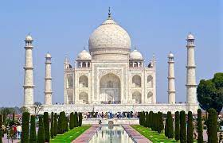
Estimated-price:
Rs:200-500/-
One of the seven wonders of the world, the epitome of love, the Taj Mahal is a huge mausoleum of white marble in the district of Agra in Uttar Pradesh, India. It is one of the most famous buildings around the world which is visited by millions of tourists from across the world every year. A witness to the great historical happenings of the Mughal Era, this construction was built by the Mughal King Shahjahan in memory of his beloved wife Mumtaz Mahal.
Approx. 20,000 stone carvers, craftsperson, and artists were hired from different corners of the country along with artists from Iraq and Turkey. They worked for around 17 years at a stretch to give a shape to this wonder.
Ajanta Caves
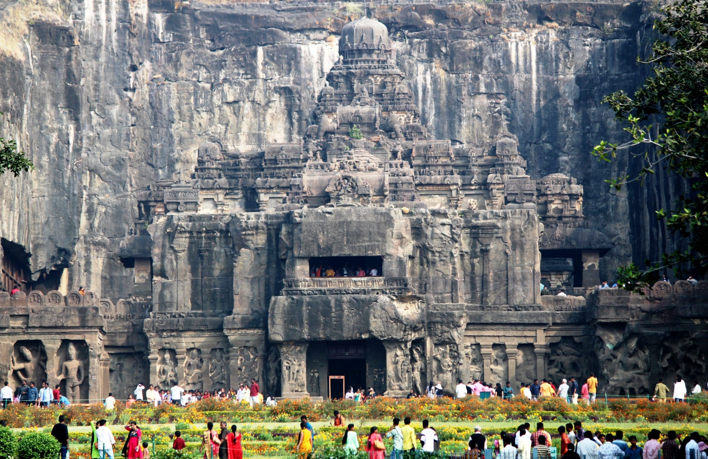
Estimated-price:
Rs:1000-2000/-
Ajanta caves are the set of 29 Buddhist cave temples. Concealed away in the hills of North-west India, around 200 miles way from the busy roads of Mumbai, a superlative gemstone of art and religion is sited.
The Ajanta Caves shaped into the face of a mountain, appear as a horseshoe around the Wangorah River. These caves are the matchless epitomes of one of nation's distinctive artistic traditions- the rock cut temples. Some of these caves date back from the 2nd century BC. Comprising the Buddhist traditions of Theravada and Mahayana, Ajanta caves boast some of the most precious works of Buddhist art that is carved in it. These spellbinding caves are situated at 55 kms distance from the Jagaon city and just 105 kms away from Aurangabad, Maharashtra.
Agra Fort
 Estimated-price:
Rs:1000-4000/-
Estimated-price:
Rs:1000-4000/-
Agra Fort is one of the most imperative and strongly built edifices of the Mughal rulers, inflated with the sum of opulentlyadorned buildings incorporating the daunting Mughal style of art and construction.It issituated in Agra of Uttar Pradesh, India. The fort is popular among tourists as Red Fort, Fort Rouge and LaalQuila of Agra. It is positioned on the rightward bank of the Yamuna River and was built by the third Mughal king Akbar on the leftovers of aprehistoricplacewell known as Badalgarh.AgraFort is constructednear the Yamuna River and expansesmore or less 2.5 km. It comprises of a wall madeof red stone and quite a lot ofstructures inside. There are two gates in the wall, the Amar Singh Gate and the Delhi Gate.
Ellora Caves
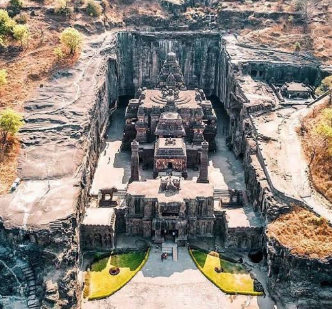
Estimated-price:
Rs:1000-2000/-
Ellora Caves is a renowned tourist place in India. The caves, situated at a distance of around 30 kilometers from Aurangabad, are famous for their amazing architecture and style. These caves are manmade temples cut into an enormous stonework hillside, constructed by generations of Jain, Hindu and Buddhist monks. Ellora Caves comprise of 34 cave temples from the period between the 6th and 11th centuries AD. Among these temples 12 are Mahayana Buddhist caves that date back to 550-750 AD, while 17 are Hindu caves belonging to 600-875 AD and 5 caves of the Jains from 800-1000 AD. The Kailasa Temple, in cave number 16, is the most outstanding of all.
Group of Monuments at Mahabalipuram
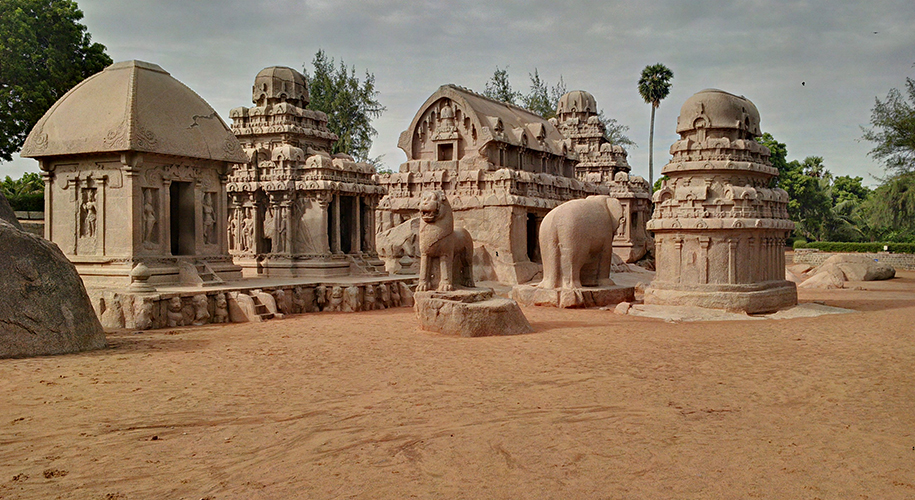
Estimated-price:
Rs:200-1000/-
A monument complex popularly known as Group of Monuments at Mahabalipuram, is positioned on the Coromandel Coast of Bay of Bengal. Mahabalipuram is situated in close proximity to Chennai in Kancheepuram district, Tamil Nadu. The architectural magnificence of the 7th and the 8th century monument makes Mahabalipuram a peerless illustration of ancient civilization and beliefs.Mahabalipuram or Mamallapuram was the capital region during the reign of Pallava Dynasty in the 7th century AD. The Pallavas rulers used to hold the ultimate command in the southern part of India, after the decline of Gupta Dynasty.
Sun Temple Konark
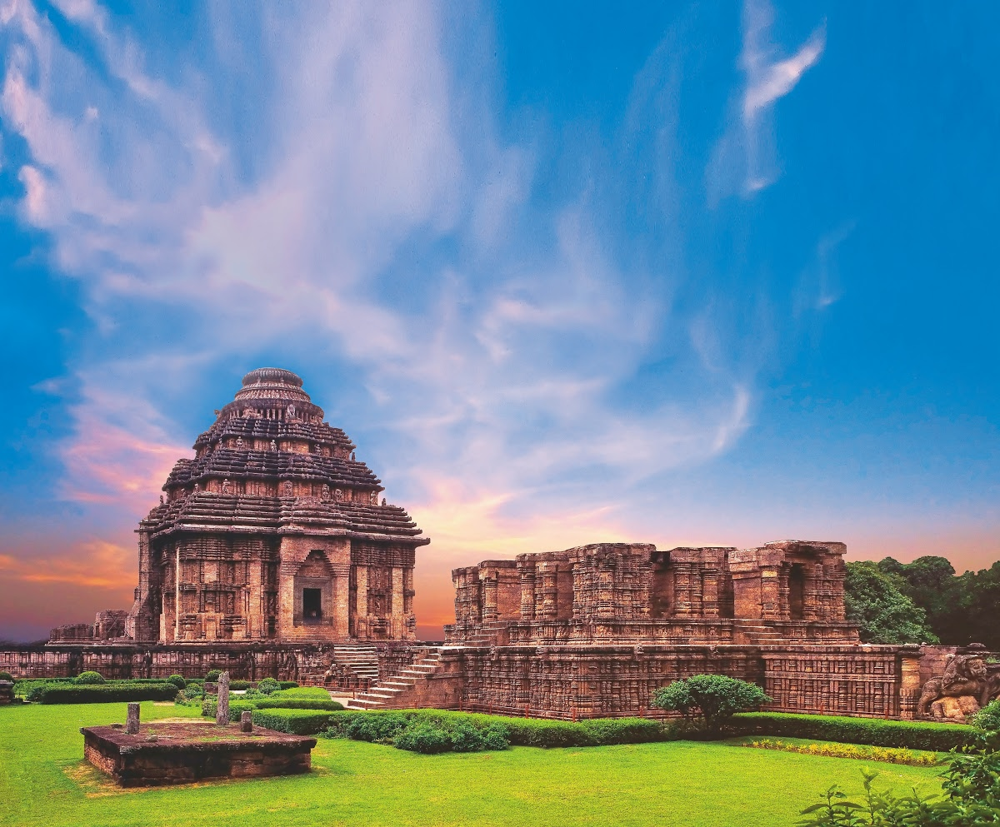
Estimated-price:
Rs:3000-8000/-
Located on the shore of Bay of Bengal, Sun Temple-Konark is the main attraction of Konark tourism. It is situated in the Puri district of Orissa. The temple was constructed under the patronage of King Narasimhadeva I of Eastern Ganga Dynasty. It is dedicated to Sun God of Hindu mythology and resembles the shape of gigantic chariot fitted with giant wheels. Every nook and corner of the temple is carved with various stone sculpture depicting different identities and activities.
The temple has 24 carved wheels divided into 12 pairs. To draw the chariot, seven giant stone horses are tied to it. The temple is designed with refined iconographical depictions of the life and activities of contemporary era.
Khajuraho Group of Monuments
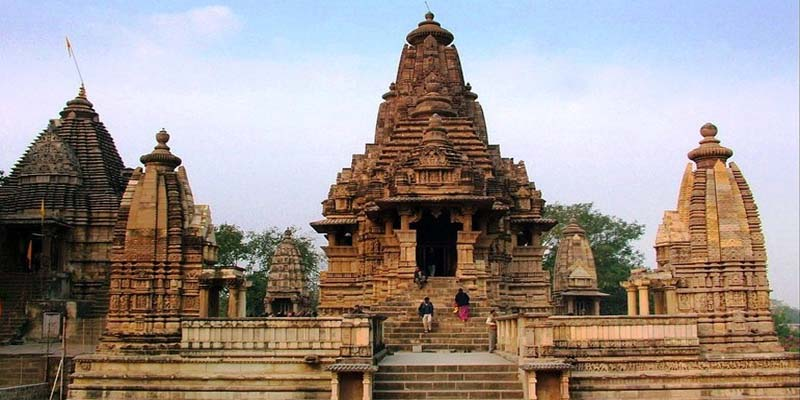
Estimated-price:
Rs:1500-4000/-
Located in Chattarpur district of Madhya Pradesh, Khajuraho is the pride of Indian architectural grandeur. It was built during the rule of Chandela Dynasty which was at its height during the time span of 950 to 1050. The temple complex was reported to be an amalgam of 85 temples in earlier days, though today only 25 temples are found. The temples are believed to be the greatest masterpiece of ancient Indian art.
Three main complexes of the temple are dedicated to different gods and goddesses of Hindu belief whereas some of them are dedicated to Jaina belief as well. The temples in western complex are mainly dedicated to Hindu deities whereas the temples in the Eastern Complex are mainly dedicated to Jaina Tirthankaras.
Brihadeeswarar Temple
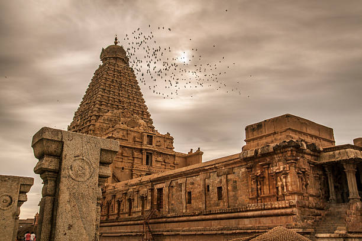
Estimated-price:
Rs:1000-3000/-
This temple is a perfect illustration of the great heights achieved in the field of architecture by the Chola rulers. It is a homage paid to Lord Shiva and is a display of power of Raja Raja Chola I.
Brihadeeshwar Temple is one of the most beautiful architectural splendors of the country. It is erected amidst the great walls made perhaps in the sixteenth century. Inside the temple, there is a temple tower famous as Vimana among the devotees and tourists. This temple tower has an elevation of 66 meters. Vimana is one of the tallest temple towers on the earth. A rounded apex structure is there in the Brihadeeshwar Temple, which is believed to be constructed out of carving on a single stone only.
Pattadkal Hampi
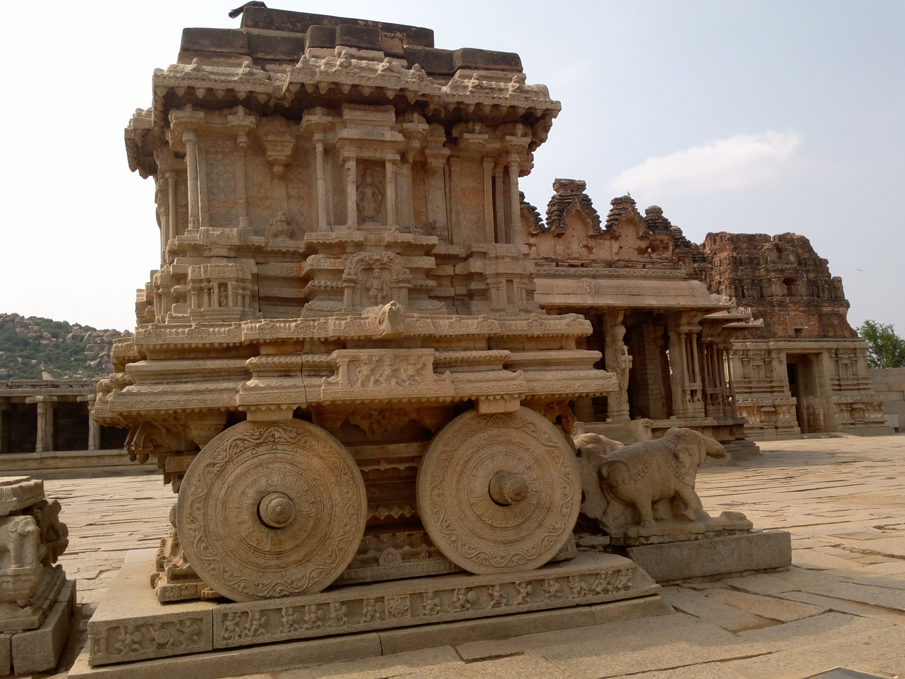
Estimated-price:
Rs:15000-20000/-
Located in Bellary district of Karnataka, Hampi is a significant historical site in India which conveys message about the well planned ancient cities and talks about one of the greatest Hindu kingdoms of Indian history. The closeness of Hampi to the river Tungabhadra adds to the magnificence of its natural setting. The property mainly covers an area of around 26 sq. km guarded by seven lines of fortifications.
Despite being ruined by the passing time, the destination encompasses more than 1500 remains of artistic works including forts, royal and sacred complexes, riverside features, shrines, temples, pillared halls, Mandapas, memorial structures, defense check posts, gateways, stables, water structures, etc. This old fortified city has number of temples which are rich in magnificent architectural design.
Churches of Goa
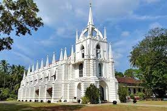
Estimated-price:
Rs:1000-4000/-
The architectural brilliance of some of the prominent churches such as the Se Cathedral, Basilica of Bom Jesus, Church of St. Francis of Assisi, Church of Lady of Rosary and the Church of St. Cajetan showcases the historical importance of Goa. The churches are the perfect example of the Portuguese era who ruled the state for almost two centuries. Most of them are in fine condition as they are wonderfully maintained by the Christians of the region and Archaeological Survey of India (ASI).Old Goa, which is a UNESCO world heritage site, has around 16 aesthetically designed churches that stand testament to the glorious days of Goa. Most of the churches have been constructed using whitewashed laterite stone and plasters. The superb paintings and chandeliers of the churches charm the people.
Great Living Chola Temples
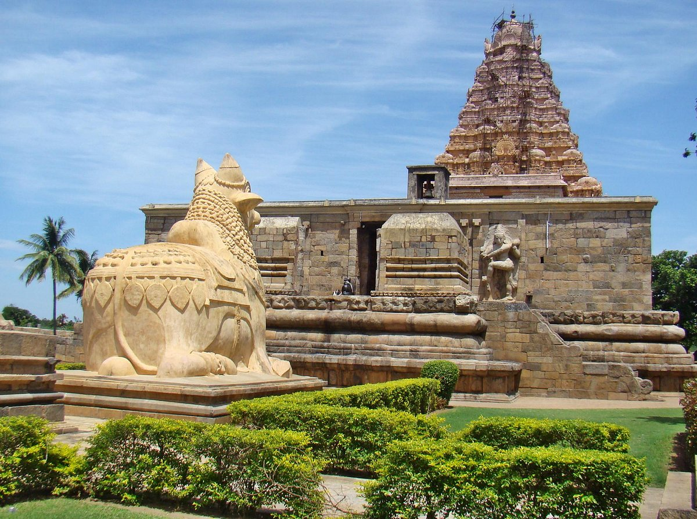
Estimated-price:
Rs:100-200/-
The Great Living Chola Temples were built by kings of the Chola Empire, which stretched over all of south India and the neighbouring islands. The site includes three great 11th- and 12th-century Temples: the Brihadisvara Temple at Thanjavur, the Brihadisvara Temple at Gangaikondacholisvaram and the Airavatesvara Temple at Darasuram. The Temple of Gangaikondacholisvaram, built by Rajendra I, was completed in 1035. Its 53-m vimana (sanctum tower) has recessed corners and a graceful upward curving movement, contrasting with the straight and severe tower at Thanjavur. The Airavatesvara temple complex, built by Rajaraja II, at Darasuram features a 24-m vimana and a stone image of Shiva. The temples testify to the brilliant achievements of the Chola in architecture, sculpture, painting and bronze casting.
Qutub Minar
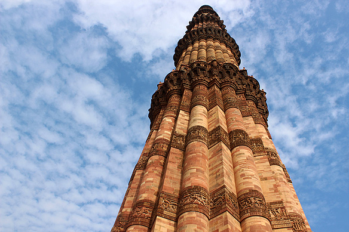
Estimated-price:
Rs:600-5000/-
Qutub Minar, the grand and artistic structure lies at a distance of few kilometres from the south of Delhi. The construction of Qutub Minar was started by Qutbu'd-Din Aibak, the founder of Slave Dynasty in India. It is mainly a complex of structures built in memory of different Slave dynasty rulers. Though the construction of the main red sandstone tower (Qutub Minar) was started by Qutbu'd-Din Aibak in the early 13th century, it was completed by his successors in later years. It is the finest example of creations of Mamluk Dynasty which is popularly known as Slave Dynasty.
It is a 73 m high tower with five distinct storeys built after the defeat of last Hindu Kingdom of ancient Delhi. The first three storeys of this wonderful tower are made with red sandstone whereas fourth and fifth storeys are of marble and sandstone.
The Red Fort complex
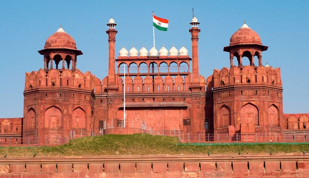
Estimated-price:
Rs:400-6000/-
The Red Fort is located on the western bank of Yamuna. It is surrounded by a wall of around 2.4 kilometers in circumference; the elevation of the wall varies from 18 meters on the bank of the river and 33 meters to the corner of city. The fort, in fact, replicates the splendor of the Mughal epoch, equally in terms of art and architecture.
The first Prime Minister of free India, Jawahar Lal Nehru, hoisted the national flag of India at the Red Fort on 15th August 1947. With this, the declaration of India as an independent and free nation was made. This presented a change in the significance of this fort from a historic to a national monument.
Jantar Mantar
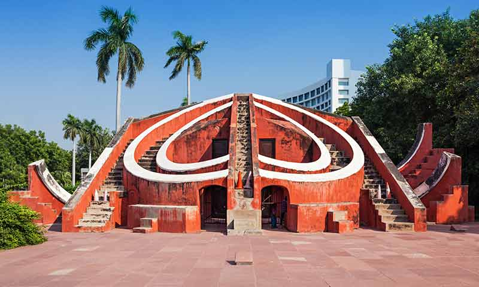
Estimated-price:
Rs:300-2000/-
Maharaja Jai Singh was a reputed astronomer. Emperor Muhammad Shah commissioned him to rectify the astronomical tables and to validate the data available on the positions of the planets. Jai Singh then built Jantar Mantar in seven years. This edifice was restored in the year 1901 and was declared as a national monument in the year 1948. The fascinating structure Jantar Mantar is completely made up of marble and stone. There are in total fourteen geometric devices in this observatory. These devices are used for computing the time of the day, predicting eclipses, the position of constellations, and the heights of celestial bodies.These geometric devices are bit complex to understand but they are mainly used to calculating the time is the major purpose. For instance, Samrat Yantra is a sundial, which can tell the time with an accuracy of only two-second difference from the local time of Jaipur.